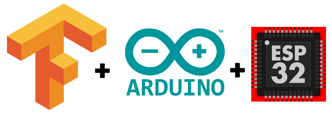
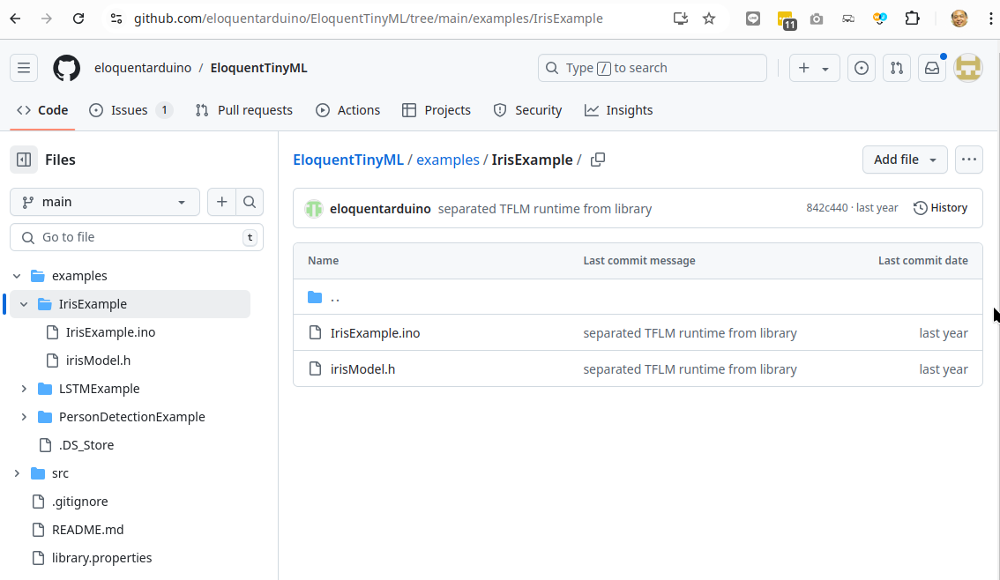
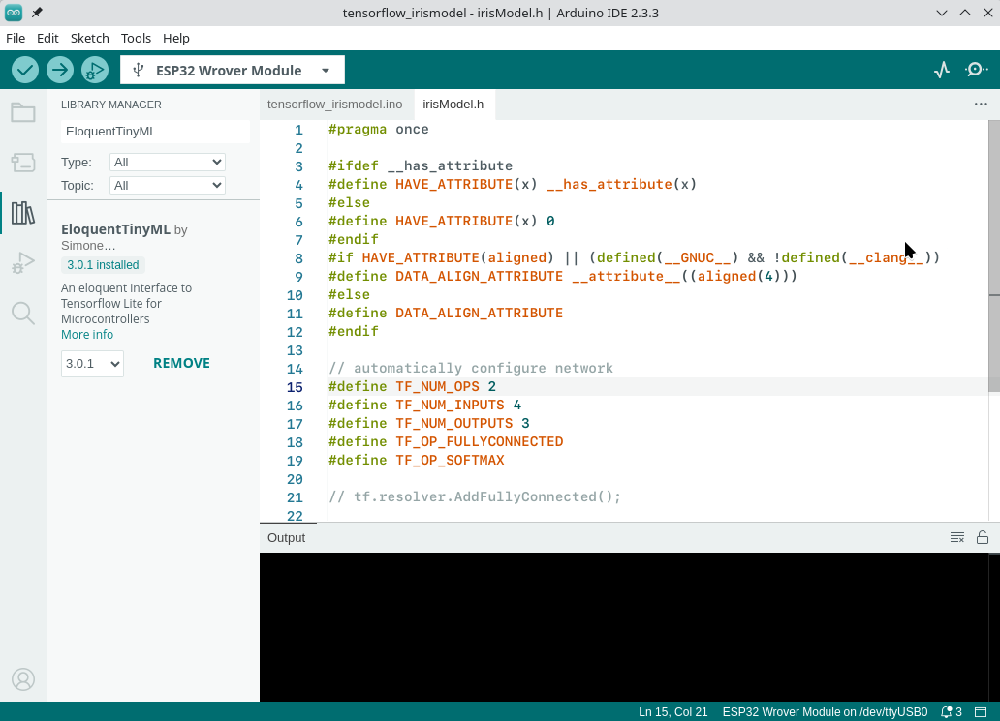
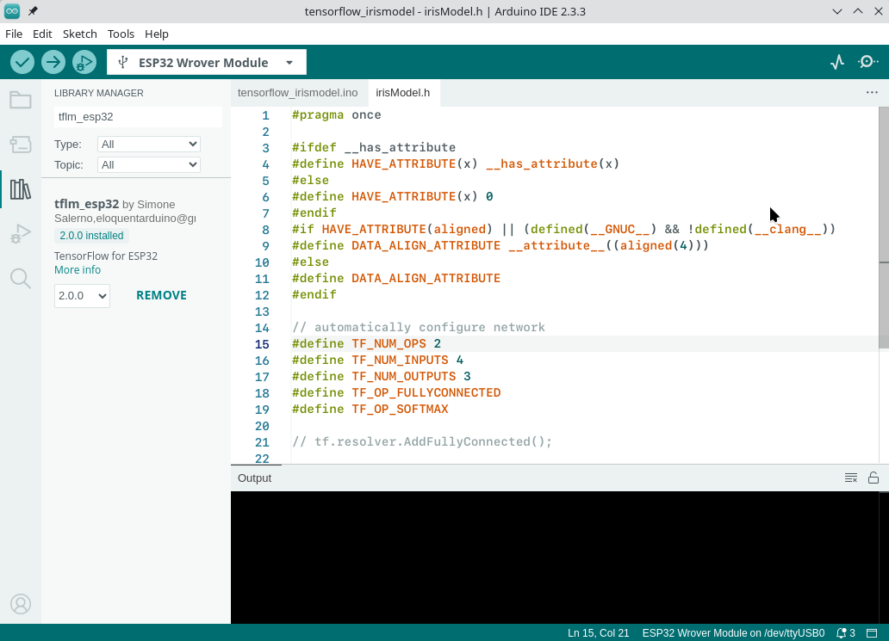

5 tensorflow lite ESP32

EloquentTinyML
เป็นไลบรารีสำหรับพัฒนาและปรับใช้โมเดลแมชชีนเลิร์นนิงขนาดเล็กบนไมโครคอนโทรลเลอร์ เช่น ESP32 และ Arduino โดยเน้นความเรียบง่ายและประสิทธิภาพในการใช้งาน TinyML (Machine Learning ขนาดเล็ก) สำหรับงาน IoT และ embedded systems
คุณสมบัติเด่นของ EloquentTinyML
- รองรับ TensorFlow Lite for Microcontrollers (TFLM):
- ใช้ร่วมกับโมเดล TFLM ได้อย่างมีประสิทธิภาพ
- รองรับการโหลดโมเดล .tflite แบบง่ายดาย
- ใช้งานง่าย:
- ออกแบบมาให้ผู้ใช้ที่ไม่มีพื้นฐานการเขียนโค้ด AI/ML ใช้งานได้สะดวก
- มี API ที่กระชับสำหรับโหลดและทำนายผล (inference)
- รองรับการประมวลผลสัญญาณ:
- มีฟังก์ชัน preprocessing เช่น การกรองข้อมูล (filters) และการคำนวณคุณสมบัติ (feature extraction) สำหรับข้อมูลสัญญาณ เช่น เสียงหรือเซ็นเซอร์
-
การจัดการหน่วยความจำที่เหมาะสม: - ถูกออกแบบให้ทำงานในหน่วยความจำที่จำกัดของไมโครคอนโทรลเลอร์
ใช้งานร่วมกับ Arduino IDE และแพลตฟอร์มอื่น:
-
ใช้กับ Arduino IDE หรือแพลตฟอร์มพัฒนาไมโครคอนโทรลเลอร์ได้ง่าย

https://github.com/eloquentarduino/EloquentTinyML/tree/main/examples/IrisExample
กระบวนการใช้งาน EloquentTinyML โดยสรุป
1. สร้างและเทรนโมเดลบนคอมพิวเตอร์
- ใช้แพลตฟอร์มเช่น TensorFlow หรือ scikit-learn ในการสร้างและเทรนโมเดล
- หากใช้ TensorFlow ให้แปลงโมเดลเป็น
.tflite (TensorFlow Lite format)
# ตัวอย่างการแปลงโมเดล TensorFlow เป็น .tflite
import tensorflow as tf
converter = tf.lite.TFLiteConverter.from_saved_model('model_path')
tflite_model = converter.convert()
with open('model.tflite', 'wb') as f:
f.write(tflite_model)
2. แปลงโมเดล .tflite เป็นไฟล์ C++
- ใช้เครื่องมือเช่น xxd หรือ EloquentTinyML Model Converter เพื่อแปลงโมเดลเป็นโค้ด C++
xxd -i model.tflite > model.h
3 ติดตั้ง EloquentTinyML
- ดาวน์โหลดและติดตั้งไลบรารีผ่าน Arduino Library Manager หรือเพิ่มโดยตรงในโฟลเดอร์โปรเจกต์
- รวมไฟล์โมเดล (model.h) ในโปรเจกต์
- เขียนโค้ดสำหรับโหลดโมเดลและประมวลผลข้อมูล
ตัวอย่าง Structure ของโปรแกรม
| tensorflow_eloquenttinyml.h |
|---|
| #include <EloquentTinyML.h>
#include "model.h" // โมเดล .h ที่ได้จากการแปลงไฟล์ .tflite
#define FEATURE_SIZE 3 // จำนวนฟีเจอร์ที่โมเดลต้องการ
Eloquent::TinyML::TfLite<FEATURE_SIZE, 2> ml; // ขนาดฟีเจอร์ และจำนวนคลาสผลลัพธ์
void setup() {
Serial.begin(9600);
ml.begin(model_data); // โหลดโมเดล
}
void loop() {
float input[FEATURE_SIZE] = {1.0, 2.0, 3.0}; // ตัวอย่างข้อมูลเข้า
float prediction = ml.predictClass(input); // ทำนายผลลัพธ์
Serial.println(prediction); // พิมพ์ผลลัพธ์
}
|
Library ที่ใช้
- EloquentTinyML

- tflm_esp32

- tflm_cortexm
| tensorflow_irismodel.h |
|---|
| /**
* Run a TensorFlow model to predict the IRIS dataset
* For a complete guide, visit
* https://eloquentarduino.com/tensorflow-lite-esp32
*/
// replace with your own model
// include BEFORE <eloquent_tinyml.h>!
#include "irisModel.h"
// include the runtime specific for your board
// either tflm_esp32 or tflm_cortexm
#include <tflm_esp32.h>
// now you can include the eloquent tinyml wrapper
#include <eloquent_tinyml.h>
// this is trial-and-error process
// when developing a new model, start with a high value
// (e.g. 10000), then decrease until the model stops
// working as expected
#define ARENA_SIZE 2000
Eloquent::TF::Sequential<TF_NUM_OPS, ARENA_SIZE> tf;
/**
*
*/
void setup() {
Serial.begin(115200);
delay(3000);
Serial.println("__TENSORFLOW IRIS__");
// configure input/output
// (not mandatory if you generated the .h model
// using the everywhereml Python package)
tf.setNumInputs(4);
tf.setNumOutputs(3);
// add required ops
// (not mandatory if you generated the .h model
// using the everywhereml Python package)
tf.resolver.AddFullyConnected();
tf.resolver.AddSoftmax();
while (!tf.begin(irisModel).isOk())
Serial.println(tf.exception.toString());
}
void loop() {
// classify class 0
if (!tf.predict(x0).isOk()) {
Serial.println(tf.exception.toString());
return;
}
Serial.print("expcted class 0, predicted class ");
Serial.println(tf.classification);
// classify class 1
if (!tf.predict(x1).isOk()) {
Serial.println(tf.exception.toString());
return;
}
Serial.print("expcted class 1, predicted class ");
Serial.println(tf.classification);
// classify class 2
if (!tf.predict(x2).isOk()) {
Serial.println(tf.exception.toString());
return;
}
Serial.print("expcted class 2, predicted class ");
Serial.println(tf.classification);
// how long does it take to run a single prediction?
Serial.print("It takes ");
Serial.print(tf.benchmark.microseconds());
Serial.println("us for a single prediction");
delay(1000);
}
|
สรุปการทำงานของ code